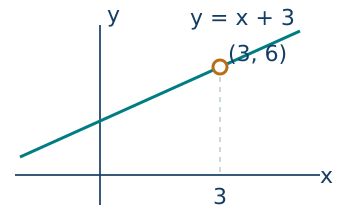
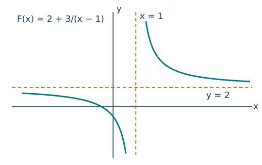

Expresiones racionales, factorización y restricciones
← Ecuaciones cuadráticas y polinomios elementales · Índice del libro · Siguiente →
Compartamos entre varias personas el arriendo de un autobús. Si el precio total está fijado, cada nuevo participante reduce la cantidad que paga cada uno, y el reparto se expresa dividiendo el costo por el número de viajeros. Esa letra situada en el denominador obliga a conservar información sobre los valores permitidos: el modelo requiere una cantidad entera positiva de participantes y la división exige un denominador distinto de cero.
Al trabajar con cocientes de polinomios encontraremos restricciones semejantes dentro del propio cálculo. Una factorización podrá hacer más breve una fracción, aunque los valores excluidos por su denominador original seguirán acompañándola. Estudiaremos qué conservan esas simplificaciones y cómo usar los signos de los factores para comparar un cociente con cero. El problema del autobús dará una primera ocasión de reunir el dominio de un modelo con las condiciones de una operación algebraica.
Compartir un costo fijo
Problema 1. Repartir un costo fijo
Enunciado. Un grupo reparte por igual un arriendo de 120 000 pesos. Escribe el pago por persona en función del número de participantes. ¿Cuántos deben participar, como mínimo, para que cada uno pague a lo sumo 8 000 pesos?
Solución. Si hay \(n\) participantes, cada uno paga \(120\,000/n\) pesos. El dominio del modelo son los enteros positivos: cero dejaría una división sin sentido y una cantidad fraccionaria no contaría personas. Con doce participantes el pago sería de 10 000 pesos; con quince, de 8 000. Para justificar el mínimo resolvemos \(120\,000/n\le8\,000\). Como \(n>0\), multiplicar por \(n\) conserva el sentido: \(120\,000\le8\,000n\), de donde \(n\ge15\). Al intersectar con los enteros positivos, el menor valor es quince. La fórmula admite otros argumentos reales en un estudio algebraico, pero el modelo de pasajeros conserva su dominio propio.
Una expresión racional es un cociente \(P(x)/Q(x)\) de polinomios, con \(Q\) no idénticamente nulo. Su dominio natural real está formado por los valores que no anulan \(Q\). Puede haber otras restricciones cuando la expresión forma parte de un modelo o de una operación más amplia. El numerador puede valer cero; el denominador no. Esta diferencia determina tanto el dominio como los ceros del cociente.
Problema 2. Encontrar las exclusiones antes de simplificar
Enunciado. Determina el dominio real de \((2x+1)/(x^2-x-6)\) y encuentra sus ceros.
Solución. Factorizamos el denominador: \(x^2-x-6=(x-3)(x+2)\). Se anula en 3 y \(-2\), así que el dominio es \(\mathbb R\setminus\{-2,3\}\). Un cociente definido vale cero exactamente cuando su numerador es cero. De \(2x+1=0\) sale \(x=-1/2\), que no es ninguna de las exclusiones. Es el único cero. El valor 3 no es un cero del cociente: allí no hay cociente definido que pueda compararse con cero.
Una cancelación cambia la escritura
Al cancelar un factor común aprovechamos que dividirlo por sí mismo da uno en los argumentos donde su valor es distinto de cero. Esa condición explica qué parte del dominio debemos conservar junto a la fórmula abreviada. La nueva escritura puede admitir un argumento excluido por la original, y podremos estudiarla allí como una extensión; para representar el cociente del que partimos seguiremos usando sus restricciones. Compararemos ambas posibilidades en una fracción que, después de factorizar, toma la forma de una recta.
Problema 3. Una recta con un punto ausente
Enunciado. Simplifica \((x^2-9)/(x-3)\) e interpreta su gráfica sobre el dominio natural.
Solución. La expresión original exige \(x\ne3\). En ese dominio, \[\frac{x^2-9}{x-3}=\frac{(x-3)(x+3)}{x-3}=x+3.\] Por tanto, su gráfica es la recta \(y=x+3\) con el punto de abscisa 3 omitido. Su posición sobre la recta sería \((3,6)\) y se representa con un círculo abierto. Por ejemplo, en \(x=2\) ambas escrituras dan 5, y en \(x=4\) dan 7. Esas igualdades son comprobaciones dentro del dominio; no permiten asignar el valor 6 a la fracción original en \(x=3\).

Problema 4. Los sumandos no son factores
Enunciado. Un estudiante afirma que \((x+2)/x=2\) porque «se cancela la equis». Examina esa afirmación y escribe una transformación válida.
Solución. El dominio exige \(x\ne0\). Dividir la suma término a término da \((x+2)/x=x/x+2/x=1+2/x\). El valor depende de \(x\): para \(x=2\) vale 2, pero para \(x=1\) vale 3. Una coincidencia en un argumento no prueba una identidad. La cancelación válida requeriría que todo el numerador tuviese un factor \(x\), por ejemplo \(x(x+2)/x=x+2\), siempre con \(x\ne0\). En \(x+2\), la letra es un sumando y no un factor de la suma completa.
Problema 5. Un factor desaparece y dos exclusiones permanecen
Enunciado. Simplifica \((x^2-4x+4)/(x^2-4)\) e indica su dominio y sus ceros.
Solución. El denominador se anula en \(\pm2\). Factorizamos el numerador como \((x-2)^2\) y el denominador como \((x-2)(x+2)\). En el dominio original la fracción equivale a \((x-2)/(x+2)\), con \(x\ne-2\) y \(x\ne2\). El numerador reducido solo se anula en 2, pero ese argumento está excluido. Por tanto, la expresión original no tiene ceros. La fórmula reducida considerada por separado sí tendría un cero en 2: es precisamente la diferencia que obliga a conservar el dominio al escribir la simplificación.
Propiedades del dominio y de la cancelación
| Propiedad | Fórmula y condiciones de uso |
|---|---|
| Dominio natural | Para \(P/Q\), el dominio real es \(\{x\in\mathbb R:Q(x)\ne0\}\). Las restricciones del contexto se intersectan con él. |
| Ceros de un cociente | En el dominio, \(P(x)/Q(x)=0\) equivale a \(P(x)=0\). Se exige \(Q(x)\ne0\). |
| Cancelación de factores | \(A(x)C(x)/(B(x)C(x))=A(x)/B(x)\) donde \(B(x)\ne0\) y \(C(x)\ne0\). La fórmula reducida conserva esas restricciones si representa la expresión original. |
| Separación de una suma | \((A+B)/C=A/C+B/C\) donde \(C\ne0\). No autoriza cancelar un sumando del numerador con el denominador. |
Pruebas. Véase «Fracciones algebraicas y operaciones en su dominio» en el apéndice. La regla del dominio fija dónde se define el cociente.
Operar sin perder las condiciones originales
Las fracciones algebraicas obedecen las reglas de las fracciones numéricas en cada argumento en que existen. Al sumar se necesita un denominador común; al dividir hay una condición adicional: la fracción divisora debe estar definida y ser distinta de cero. Conviene registrar esas condiciones antes de transformar la escritura, porque después pueden quedar ocultas.
Problema 6. Un producto que siempre vale uno donde existe
Enunciado. Simplifica \(\dfrac{x^2-1}{x^2+3x+2}\cdot\dfrac{x+2}{x-1}\), conservando el dominio.
Solución. Los denominadores se factorizan como \((x+1)(x+2)\) y \(x-1\). Excluimos \(-1\), \(-2\) y 1. El numerador \(x^2-1=(x-1)(x+1)\) permite escribir el producto como \[\frac{(x-1)(x+1)(x+2)}{(x+1)(x+2)(x-1)}=1.\] Cada cancelación es lícita en el dominio registrado. El resultado es la constante 1 sobre \(\mathbb R\setminus\{-2,-1,1\}\); no es una fórmula que asigne valor a los tres argumentos excluidos.
Problema 7. Dividir exige revisar también el cero del divisor
Enunciado. Simplifica \(\dfrac{x^2-1}{x-2}\div\dfrac{x+1}{x-3}\).
Solución. La primera fracción exige \(x\ne2\) y la segunda, \(x\ne3\). Además, el divisor no puede valer cero: \(x+1\ne0\), de modo que \(x\ne-1\). Con las tres exclusiones fijadas, multiplicamos por el recíproco: \[\frac{(x-1)(x+1)}{x-2}\cdot\frac{x-3}{x+1} =\frac{(x-1)(x-3)}{x-2}.\] La fórmula final mantiene \(x\notin\{-1,2,3\}\). En particular, que su numerador se anule en 3 no vuelve admisible ese argumento: allí la fracción divisora original no existe. El único cero del cociente compuesto es 1, que sí pertenece al dominio.
Problema 8. Construir un denominador común
Enunciado. Suma \(1/(x-1)+1/(x+1)\) y encuentra los ceros del resultado sobre su dominio.
Solución. Excluimos \(x=\pm1\). Multiplicamos la primera fracción por \((x+1)/(x+1)\) y la segunda por \((x-1)/(x-1)\). Esos factores valen uno en el dominio. La suma queda \[\frac{x+1+x-1}{(x-1)(x+1)}=\frac{2x}{x^2-1}.\] El único cero es \(x=0\), admisible. En efecto, la suma inicial vale \(-1+1=0\). Sumar denominadores habría cambiado la operación: el denominador común se obtiene de fracciones equivalentes antes de sumar sus numeradores.
Problema 9. Restar la totalidad del segundo numerador
Enunciado. Simplifica \(3/x-2/(x+1)\).
Solución. El dominio excluye 0 y \(-1\). Con denominador \(x(x+1)\) obtenemos \([3(x+1)-2x]/[x(x+1)]=(x+3)/[x(x+1)]\). La resta afecta al segundo numerador completo. Una comprobación en \(x=1\) da \(3-1=2\) en la expresión inicial y \(4/2=2\) en la final. La justificación general está en el uso de un denominador común no nulo, no en esa comprobación aislada.
Problema 10. Una fracción dentro de otra
Enunciado. Simplifica \((1+1/x)/(1-1/x)\).
Solución. Las fracciones interiores exigen \(x\ne0\). El denominador exterior no puede anularse: \(1-1/x=0\) daría \(x=1\), también excluido. Multiplicar numerador y denominador exteriores por \(x\) es lícito en ese dominio y produce \((x+1)/(x-1)\). La respuesta conserva \(x\ne0,1\). Aunque la fórmula reducida tenga valor \(-1\) en cero, la expresión inicial no tiene allí ninguna de sus dos fracciones interiores definidas.
Reglas para operar fracciones algebraicas
| Propiedad | Fórmula y condiciones de uso |
|---|---|
| Suma y resta | \(A/B\pm C/D=(AD\pm BC)/(BD)\), con \(B,D\ne0\) en cada argumento. |
| Producto | \((A/B)(C/D)=AC/(BD)\), con \(B,D\ne0\). Las cancelaciones posteriores conservan el dominio original. |
| División | \((A/B)\div(C/D)=AD/(BC)\), con \(B,D,C\ne0\): el divisor debe existir y no valer cero. |
| Amplificación | \(A/B=AH/(BH)\) donde \(B,H\ne0\). Multiplicar numerador y denominador de una fracción compleja por \(H\) requiere además que sus expresiones originales existan. |
Pruebas. Véase «Fracciones algebraicas y operaciones en su dominio» en el apéndice.
Resolver dentro de un dominio que ya conocemos
Una ecuación racional pregunta por los argumentos de un dominio en los que dos valores coinciden. Si multiplicamos por todos los denominadores, el factor utilizado es no nulo dentro de ese dominio y el paso es reversible allí. La ecuación polinómica resultante puede tener raíces fuera de él. Esas raíces no son soluciones de la pregunta original.
Problema 11. Eliminar denominadores por una operación reversible
Enunciado. Resuelve \(2/(x-1)=3/(x+1)\).
Solución. Excluimos \(x=\pm1\). Multiplicar por \((x-1)(x+1)\) da \(2(x+1)=3(x-1)\), de donde \(2x+2=3x-3\) y \(x=5\). Es admisible; la comprobación entrega \(2/4=3/6=1/2\). La ecuación lineal tiene una sola raíz y el procedimiento es equivalente en el dominio, así que no quedan otras soluciones.
Problema 12. Una ecuación transformada cuyo candidato está prohibido
Enunciado. Resuelve \((x^2-1)/(x-1)=2\).
Solución. El dominio exige \(x\ne1\). Factorizar y cancelar dentro de él da \(x+1=2\), cuyo único candidato es 1. Como está excluido, el conjunto solución es vacío. Si se hubiese multiplicado por \(x-1\) sin anotar el dominio, aparecería \((x-1)^2=0\) y el mismo candidato prohibido. La comprobación en la expresión original no produce una igualdad falsa: produce una división que no está definida, suficiente para descartarlo.
Problema 13. Dos soluciones irracionales y ningún denominador nulo
Enunciado. Resuelve \(1/(x-1)+1/(x+1)=1\).
Solución. Sobre \(x\ne\pm1\) la suma del problema 8 permite escribir \(2x/(x^2-1)=1\). Multiplicar por el denominador no nulo da \(x^2-2x-1=0\), equivalente a \((x-1)^2=2\). Los candidatos son \(1\pm\sqrt2\). Ninguno es 1 ni \(-1\): el primero exigiría \(\sqrt2=0\) y el segundo que \(\sqrt2=2\) o \(-2\), imposibles al cuadrar. Para verificar, cada candidato cumple \(x^2-1=2x\ne0\), por lo que la suma original vale \(2x/(x^2-1)=1\). Las equivalencias y las dos ramas del cuadrado prueban que la lista es completa.
Problema 14. Un numerador que decide la igualdad
Enunciado. Resuelve \(1/x+1/(x-2)=0\).
Solución. El dominio excluye 0 y 2. La suma es \((2x-2)/[x(x-2)]\). En él, el cociente se anula exactamente cuando \(2x-2=0\), así que \(x=1\). Sustituir en la suma inicial da \(1-1=0\). La raíz es admisible y única.
Propiedades de las ecuaciones racionales
| Propiedad | Fórmula y condiciones de uso |
|---|---|
| Eliminación de denominadores | En un dominio \(D\) donde \(H(x)\ne0\), \(F(x)=G(x)\) equivale a \(H(x)F(x)=H(x)G(x)\). Un producto de denominadores originales sirve en su dominio común. |
| Selección de candidatos | Si la ecuación transformada tiene conjunto solución \(S\), el original es \(S\cap D\) cuando la transformación fue equivalente en \(D\). |
| Identidad o contradicción | Una igualdad verdadera para todo \(x\in D\) tiene solución \(D\); una igualdad imposible allí tiene solución vacía. La simplificación no añade argumentos ajenos a \(D\). |
Pruebas. Véase «Ecuaciones y signos de expresiones racionales» en el apéndice.
Un denominador puede cambiar el sentido de una desigualdad
Al eliminar denominadores en una igualdad aprovechábamos que el factor era no nulo en el dominio; en una desigualdad necesitamos conocer además su signo para decidir si se conserva o se invierte el sentido. Un factor como \(x-r\) es negativo a la izquierda de \(r\) y positivo a su derecha. Por eso la factorización permite organizar el cálculo en intervalos: sus ceros marcan las posiciones donde debemos revisar un signo o una exclusión, y dentro de cada intervalo los factores reales lineales mantienen su signo. El cociente se estudia combinando esos signos antes de seleccionar los intervalos que cumplen la condición.
Problema 15. Separar un cero de un punto prohibido
Enunciado. Resuelve \((x-2)/(x+1)\ge0\).
Solución. El valor \(-1\) está excluido; el valor 2 anula el numerador y es admisible. Son los puntos que separan los intervalos de signos. A la izquierda de \(-1\), ambos factores son negativos y el cociente es positivo. Entre \(-1\) y 2, el numerador es negativo y el denominador positivo. A la derecha de 2, ambos son positivos.
| Intervalo | Signos de numerador, denominador y cociente |
|---|---|
| \(x<-1\) | Negativo entre negativo: positivo. |
| \(-1<x<2\) | Negativo entre positivo: negativo. |
| \(x>2\) | Positivo entre positivo: positivo. |
Incluimos 2 porque se permite la igualdad; excluimos \(-1\) porque no pertenece al dominio. El conjunto solución es \((-\infty,-1)\cup[2,\infty)\). La tabla describe intervalos completos: los signos se deducen de las desigualdades que definen cada intervalo.
Problema 16. Un cero de multiplicidad par
Enunciado. Resuelve \((x-1)^2/(x+2)\le0\).
Solución. Excluimos \(-2\). El numerador es positivo salvo en 1, donde vale cero. Para \(x<-2\), el denominador es negativo y el cociente, negativo. Para \(x>-2\), el cociente es positivo salvo en \(x=1\), donde vale cero. Por tanto, la solución es \((-\infty,-2)\cup\{1\}\). El signo no cambia al atravesar 1 porque el factor está elevado al cuadrado. El cero aislado debe examinarse aunque los intervalos a ambos lados no satisfagan la desigualdad.
Problema 17. Comparar una fracción con una constante
Enunciado. Resuelve \(1/(x-1)>2\).
Solución. Excluimos 1 y reunimos todo en un miembro: \[\frac1{x-1}-2=\frac{3-2x}{x-1}>0.\] Los puntos críticos son 1 y \(3/2\). Para \(x<1\), el numerador es positivo y el denominador negativo. Para \(1<x<3/2\), ambos son positivos. Para \(x>3/2\), el numerador es negativo y el denominador positivo. Solo sirve \((1,3/2)\). El extremo 1 está prohibido; el extremo \(3/2\) entrega igualdad y se excluye porque la desigualdad es estricta. Multiplicar directamente por \(x-1\) conservando siempre el sentido habría ignorado la mitad del dominio donde ese factor es negativo.
Problema 18. Una exclusión que interrumpe un intervalo
Enunciado. Resuelve \((x^2-1)/(x-1)\ge0\).
Solución. Conservamos \(x\ne1\). En ese dominio la expresión es \(x+1\), así que necesitamos \(x\ge-1\). Al intersectar ambas condiciones obtenemos \([-1,1)\cup(1,\infty)\). El valor \(-1\) se incluye porque anula el numerador sin anular el denominador. El valor 1 sigue excluido aunque la fórmula reducida fuese positiva allí. La solución se escribe en dos intervalos para mostrar esa ausencia.
Propiedades para estudiar signos
| Propiedad | Fórmula y condiciones de uso |
|---|---|
| Puntos que separan el estudio | En un cociente factorizado en factores reales lineales, sus ceros y los de sus denominadores separan los intervalos. Los puntos excluidos permanecen fuera de la solución. |
| Paridad de un factor | Para \(m\ge1\) entero y \(x\ne r\), \((x-r)^m\) conserva el signo de \(x-r\) si \(m\) es impar; es positivo si \(m\) es par. |
| Signo de un cociente | Con denominador no nulo y numerador no nulo, el cociente es positivo si tienen el mismo signo y negativo si tienen signos opuestos. |
| Inclusión de extremos | Al comparar con cero, los ceros admisibles se incluyen para \(\le\) o \(\ge\) y se excluyen para \(<\) o \(>\). Ningún cero del denominador original se incluye. |
Pruebas. Véase «Ecuaciones y signos de expresiones racionales» en el apéndice. Las cuadráticas sin raíces reales, si aparecen como factores, se estudian por su cuadrado completo antes de combinar signos.
Un punto ausente y una rama que se aleja sin cota
La anulación de un denominador no decide por sí sola la forma de la gráfica cerca de ese argumento. En el problema 3, la cancelación dejó una recta con un único punto ausente. En una fracción como \(1/(x-3)\) no hay un factor del numerador que pueda cancelarse. Al acercar \(x\) a 3, el valor absoluto del recíproco crece sin cota. Estas situaciones exigen interpretaciones distintas.
Problema 19. Distinguir un hueco de una asíntota vertical
Enunciado. Compara, cerca de \(x=1\), las expresiones \(f(x)=(x^2-1)/(x-1)\) y \(g(x)=1/(x-1)\).
Solución. Ambas excluyen 1. Para \(x\ne1\), \(f(x)=x+1\). Si \(x\) se acerca a 1, la diferencia entre \(f(x)\) y 2 es exactamente \(x-1\), de modo que podemos hacerla tan pequeña como queramos. Falta el punto \((1,2)\) y asignarle el valor 2 completaría la recta. Esta ausencia se llama discontinuidad removible o hueco, en el sentido elemental que acabamos de describir.
Para \(g\), los argumentos \(1+1/10\) y \(1+1/100\) dan 10 y 100; por la izquierda, \(1-1/10\) y \(1-1/100\) dan \(-10\) y \(-100\). La explicación general es \(|g(x)|=1/|x-1|\): para superar cualquier cota positiva \(M\), basta \(0<|x-1|<1/M\). La recta \(x=1\) es una asíntota vertical. No hay una altura finita que pueda rellenar ese comportamiento con un solo punto. Los valores de ejemplo ilustran la diferencia; la desigualdad demuestra que no existe una cota de tamaño al acercarnos al argumento excluido.
Problema 20. Leer dos asíntotas desde una división
Enunciado. Describe el comportamiento de \(F(x)=(2x+1)/(x-1)\) cerca de 1 y para argumentos de gran valor absoluto.
Solución. La división da \(F(x)=2+3/(x-1)\), con \(x\ne1\). Cerca de 1, el término recíproco puede superar cualquier cota en valor absoluto: por la derecha es positivo y por la izquierda negativo. Por ejemplo, \(F(1{,}01)=302\) y \(F(0{,}99)=-298\). La asíntota vertical es \(x=1\).
Para argumentos alejados, \(|F(x)-2|=3/|x-1|\). Si queremos que la diferencia sea menor que una tolerancia \(\varepsilon>0\), basta exigir \(|x-1|>3/\varepsilon\). La recta \(y=2\) es una asíntota horizontal: describe una aproximación cuando el argumento se aleja indefinidamente. Aquí la gráfica nunca la alcanza, pues \(3/(x-1)\) nunca vale cero. El concepto de asíntota horizontal, por sí solo, no prohíbe que otras funciones la corten.

Propiedades de las representaciones racionales
| Propiedad | Fórmula y condiciones de uso |
|---|---|
| Hueco con extensión finita | Si \(f(x)=h(x)\) para \(x\ne r\) cerca de \(r\) y \(h(x)\) se aproxima a un número finito \(L\), el punto ausente puede completarse asignando \(f(r)=L\). Esto define una extensión; no altera el dominio inicial. |
| Polo recíproco | Para \(B\ne0\), \(A+B/(x-r)\) crece sin cota en valor absoluto cuando \(x\) se acerca a \(r\) sin igualarlo; \(x=r\) es una asíntota vertical. |
| Aproximación horizontal | Para \(A+B/(x-r)\), la diferencia respecto de \(A\) tiene valor absoluto \(\lvert B\rvert/\lvert x-r\rvert\). Tiende a cero al alejarse el argumento: \(y=A\) es asíntota horizontal. |
| Igualdad de funciones | Con el mismo conjunto de llegada, dos funciones son iguales si tienen el mismo dominio y el mismo valor en cada argumento de ese dominio. Una igualdad de fórmulas en el dominio común no basta si sus dominios son distintos. |
Pruebas. Véanse «Huecos y aproximaciones de una fracción» y «Dominio, igualdad de funciones y parámetros» en el apéndice. Las nociones de hueco y asíntota se emplean con el significado de aproximación explicitado en el texto; el estudio formal de límites se desarrollará en cálculo.
Las fracciones también describen ritmos
Con ritmos constantes y aportes aditivos, la parte de tarea realizada en una hora por varias máquinas es la suma de las partes que realiza cada una en ese tiempo. De modo semejante, una concentración compara una cantidad de sustancia con un volumen y un tiempo de viaje compara distancia con rapidez. La ecuación depende del significado del cociente.
Problema 21. Dos máquinas que comparten una tarea
Enunciado. Una máquina completa una tarea en seis horas y otra en tres. Si mantienen ritmos constantes y sus aportes se suman sin interferencia, ¿cuánto tardan trabajando juntas?
Solución. La primera realiza \(1/6\) de la tarea por hora y la segunda \(1/3\). Juntas realizan \(1/6+1/3=1/2\) de la tarea por hora. Si el tiempo es \(t>0\), la tarea completa exige \(t/2=1\), así que \(t=2\) horas. La comprobación es \(2/6+2/3=1\). Sumar seis y tres habría sumado tiempos de ejecuciones separadas, sin describir el trabajo simultáneo. El resultado depende de que los ritmos se mantengan y los aportes realmente puedan sumarse.
Problema 22. Dos viajes de igual distancia
Enunciado. Dos vehículos recorren 120 kilómetros a rapidez constante. El segundo viaja 20 kilómetros por hora más rápido y tarda una hora menos. Encuentra las dos rapideces.
Solución. Sea \(v>0\) la rapidez del primero en kilómetros por hora. Sus tiempos, en horas, son \(120/v\) y \(120/(v+20)\). La condición es \[\frac{120}{v}-\frac{120}{v+20}=1.\] Los denominadores son positivos en el dominio físico. Multiplicar por \(v(v+20)\) produce \(2400=v(v+20)\), es decir, \((v+60)(v-40)=0\). Los candidatos algebraicos son \(-60\) y 40; solo el segundo pertenece a \(v>0\). Las rapideces son 40 y 60 kilómetros por hora. Los tiempos resultan tres y dos horas, cuya diferencia es una. Las unidades y el dominio se fijaron antes de eliminar denominadores.
Problema 23. Diluir sin cambiar la cantidad de sustancia
Enunciado. Se tienen veinte litros de una mezcla que contiene un 30 % de cierta sustancia por volumen. ¿Cuánta agua debe añadirse para obtener una concentración del 20 %? Supón volúmenes aditivos y agua sin esa sustancia.
Solución. La cantidad de sustancia es \(0{,}30\cdot20=6\) litros y permanece fija. Si añadimos \(x\ge0\) litros de agua, el volumen total es \(20+x\) y la concentración exige \(6/(20+x)=0{,}20\). El denominador es positivo en el dominio. De \(6=0{,}20(20+x)\) obtenemos \(x=10\). Se comprueba \(6/30=0{,}20\). El porcentaje final tiene como base los treinta litros resultantes, no los veinte iniciales. La aditividad de volúmenes es una hipótesis del modelo y no una regla universal de mezclas.
Una misma fórmula parcial puede responder preguntas diferentes
La simplificación del problema 3 conservaba todos los valores ya definidos y dejaba un punto sin asignar. Si decidimos añadir ese punto, construimos otra función. La comparación exige declarar el dominio de cada una. Esta distinción se vuelve especialmente visible cuando una ecuación contiene un parámetro: un candidato puede coincidir con la exclusión solo para un valor del parámetro.
Problema 24. Un parámetro que coloca la solución en el hueco
Enunciado. Resuelve \((x^2-1)/(x-1)=k\) para todo parámetro real \(k\). Compara además la función de la izquierda, en su dominio natural, con \(g(x)=x+1\) definida en todos los reales.
Solución. El dominio de la ecuación siempre excluye \(x=1\). En él la condición equivale a \(x+1=k\), cuyo único candidato es \(x=k-1\). Si \(k\ne2\), ese candidato es distinto de 1 y sirve: el cociente original vale \(x+1=k\). Si \(k=2\), el candidato es el punto prohibido y no hay solución. La clasificación es exhaustiva porque la ecuación lineal transformada tiene un solo candidato para cada \(k\).
La función original tiene dominio \(\mathbb R\setminus\{1\}\); \(g\) tiene dominio \(\mathbb R\). Sus valores coinciden donde ambas existen, pero no son la misma función con esos dominios. Restringir \(g\) a \(\mathbb R\setminus\{1\}\) sí produce la función original. Extender esta última mediante el valor 2 en 1 produce \(g\). Cada operación declara expresamente qué hace con el dominio.
Ejercicios para trabajar sin profesor
Anota primero las exclusiones y las restricciones del contexto. Conserva el dominio al simplificar. En ecuaciones, comprueba todos los candidatos; en desigualdades, justifica los signos sobre intervalos completos y examina sus extremos.
1. Un grupo reparte 180 000 pesos de arriendo. Escribe el pago por persona y determina el mínimo de participantes para pagar a lo sumo 9 000 pesos cada uno.
2. Encuentra dominio y ceros de \((x-1)/(x^2+x-12)\).
3. Simplifica \((x^2-16)/(x-4)\) y describe el punto ausente de su gráfica.
4. Examina la afirmación \((x+3)/x=2\) y escribe una transformación válida.
5. Simplifica \((x^2+6x+9)/(x^2-9)\); conserva el dominio y encuentra sus ceros.
6. Simplifica \(\dfrac{x^2-4}{x^2+5x+6}\cdot\dfrac{x+3}{x-2}\).
7. Simplifica \(\dfrac{x^2-4}{x-1}\div\dfrac{x+2}{x-4}\), registrando todas las exclusiones.
8. Suma \(1/(x-2)+1/(x+2)\) y encuentra sus ceros.
9. Simplifica \(4/x-3/(x+2)\).
10. Simplifica \((1+2/x)/(1-2/x)\).
11. Resuelve \(3/(x-2)=4/(x+2)\).
12. Resuelve \((x^2-4)/(x-2)=4\).
13. Resuelve \(1/(x-2)+1/(x+2)=1\).
14. Resuelve \(1/x+1/(x-4)=0\).
15. Resuelve \((x+1)/(x-3)\ge0\).
16. Resuelve \((x+2)^2/(x-1)\ge0\).
17. Resuelve \(1/(x-2)>3\).
18. Resuelve \((x^2-4)/(x-2)\ge0\).
19. Compara, cerca de 2, \((x^2-4)/(x-2)\) y \(1/(x-2)\): distingue hueco de asíntota vertical y justifica el comportamiento.
20. Estudia \((3x+2)/(x+1)\) cerca de \(-1\) y para argumentos de gran valor absoluto. Encuentra sus asíntotas y una condición que garantice una diferencia menor que \(\varepsilon>0\) respecto de la horizontal.
21. Dos máquinas completan una tarea por separado en ocho y doce horas. Con ritmos constantes y aportes aditivos, ¿cuánto tardan juntas?
22. Dos vehículos recorren 180 kilómetros. El segundo viaja treinta kilómetros por hora más rápido y tarda una hora menos. Encuentra sus rapideces constantes.
23. Treinta litros de una mezcla contienen un 40 % de sustancia por volumen. ¿Cuánta agua debe añadirse para obtener un 30 %, suponiendo volúmenes aditivos?
24. Resuelve \((x^2-4)/(x-2)=k\) según \(k\in\mathbb R\). Compara la función de la izquierda con \(x+2\) definida sobre todos los reales.
Soluciones desarrolladas
Ejercicio 1. Un mínimo entero
Con \(n\) participantes, cada uno paga \(180\,000/n\) pesos y \(n\) debe ser entero positivo. La condición \(180\,000/n\le9\,000\) equivale, al multiplicar por \(n>0\), a \(n\ge20\). El menor entero admisible es veinte. Cada uno paga entonces 9 000 pesos; con diecinueve el pago es mayor porque el mismo costo se divide entre menos personas. El dominio del modelo impide aceptar cero o fracciones de participante.
Ejercicio 2. El denominador decide el dominio
Factorizamos \(x^2+x-12=(x+4)(x-3)\). El dominio excluye \(-4\) y 3. El numerador se anula en 1, que es admisible, de modo que ese es el único cero. En 1 el denominador vale \(-10\ne0\); en las exclusiones no existe valor de la fracción.
Ejercicio 3. Una recta incompleta
El dominio exige \(x\ne4\). En él, \((x^2-16)/(x-4)=(x-4)(x+4)/(x-4)=x+4\). Su gráfica es la recta de esa ecuación sin el punto \((4,8)\). La fórmula reducida conserva la exclusión si representa la fracción original; asignar el valor 8 en 4 sería construir su extensión.
Ejercicio 4. Dividir cada sumando
Para \(x\ne0\), \((x+3)/x=1+3/x\). En \(x=3\) vale 2, pero en \(x=1\) vale 4. El segundo caso refuta la identidad propuesta. Cancelar requiere un factor de todo el numerador; la suma \(x+3\) no lo exhibe. La separación válida usa la distributividad de la división por un número no nulo.
Ejercicio 5. Un cero excluido
El dominio excluye \(\pm3\). Factorizamos \((x+3)^2/[(x-3)(x+3)]\) y obtenemos \((x+3)/(x-3)\) sobre ese dominio. El único candidato a cero es \(-3\), que está prohibido. Por tanto, la expresión original no tiene ceros. El dominio reducido no se amplía después de cancelar el factor.
Ejercicio 6. Tres cancelaciones válidas
Los denominadores originales excluyen \(-2\), \(-3\) y 2. Escribimos el producto como \((x-2)(x+2)(x+3)/[(x+2)(x+3)(x-2)]\). Cada factor cancelado es no nulo en el dominio. El producto vale 1 para todo \(x\notin\{-3,-2,2\}\) y no tiene valor en los tres puntos excluidos.
Ejercicio 7. Una exclusión aportada por el divisor
Las fracciones exigen \(x\ne1,4\). El divisor no puede valer cero, así que también \(x\ne-2\). Multiplicar por su recíproco da \((x-2)(x+2)(x-4)/[(x-1)(x+2)]=(x-2)(x-4)/(x-1)\). Se conservan las tres exclusiones. Su único cero admisible es 2; el candidato 4 de la fórmula reducida sigue prohibido.
Ejercicio 8. Una suma con cancelación de constantes
Sobre \(x\ne\pm2\), usamos el denominador \((x-2)(x+2)\). El numerador es \((x+2)+(x-2)=2x\) y la suma vale \(2x/(x^2-4)\). Su único cero es 0, admisible: en la suma inicial produce \(-1/2+1/2=0\).
Ejercicio 9. Restar después de amplificar
Excluimos 0 y \(-2\). Con denominador \(x(x+2)\) obtenemos \([4(x+2)-3x]/[x(x+2)]=(x+8)/[x(x+2)]\). Cada amplificación utiliza factores no nulos en el dominio. En \(x=2\), la expresión inicial vale \(2-3/4=5/4\) y la final, \(10/8=5/4\).
Ejercicio 10. Dos niveles de denominadores
Primero \(x\ne0\). El denominador exterior \(1-2/x\) se anula en 2, también excluido. Multiplicar arriba y abajo por \(x\ne0\) da \((x+2)/(x-2)\), con \(x\ne0,2\). El cero de esta expresión es \(-2\), admisible, pero el argumento cero no se recupera aunque la fórmula final esté definida allí.
Ejercicio 11. Un candidato admisible
El dominio excluye \(\pm2\). Multiplicar por \((x-2)(x+2)\) da \(3(x+2)=4(x-2)\), de donde \(3x+6=4x-8\) y \(x=14\). La comprobación produce \(3/12=4/16=1/4\). La transformación fue equivalente en el dominio y la ecuación lineal tiene una sola raíz; la solución es \(\{14\}\).
Ejercicio 12. El único candidato no sirve
Excluimos 2. En el dominio, la fracción es \(x+2\). La ecuación transformada exige \(x+2=4\), cuyo único candidato es 2, prohibido. El conjunto solución es vacío. Multiplicar directamente por \(x-2\) daría \((x-2)^2=0\), que no añade una solución admisible.
Ejercicio 13. Dos raíces exactas
El dominio excluye \(\pm2\). La suma es \(2x/(x^2-4)\) y la ecuación equivale allí a \(x^2-2x-4=0\). Completamos \((x-1)^2=5\), de donde \(x=1\pm\sqrt5\). Ninguna raíz es 2 ni \(-2\): esos valores no anulan el polinomio transformado, que en ellos vale \(-4\) y 4. Para cada raíz, \(x^2-4=2x\ne0\) y la suma inicial vale uno. Las dos ramas agotan las soluciones.
Ejercicio 14. Un cero de la suma
Excluimos 0 y 4. La suma queda \((2x-4)/[x(x-4)]\), que se anula en el dominio exactamente para \(x=2\). Es admisible y produce \(1/2-1/2=0\). No hay otros candidatos del numerador lineal.
Ejercicio 15. Tres intervalos y dos extremos distintos
El denominador excluye 3 y el numerador se anula en \(-1\). Para \(x<-1\), ambos factores son negativos y el cociente positivo. Para \(-1<x<3\), los signos son positivo y negativo. Para \(x>3\), ambos son positivos. Se incluye \(-1\) por la igualdad y se excluye 3 por el dominio. La solución es \((-\infty,-1]\cup(3,\infty)\).
Ejercicio 16. Un cero aislado en el lado negativo
Excluimos 1. El numerador es positivo salvo en \(-2\), donde vale cero. A la izquierda de 1 el denominador es negativo; el cociente solo satisface \(\ge0\) en \(x=-2\). A la derecha de 1 el denominador es positivo y el numerador también, por lo que todos esos argumentos sirven. La solución es \(\{-2\}\cup(1,\infty)\). El cero de multiplicidad par no cambia el signo a sus lados.
Ejercicio 17. Reunir en un miembro
Sobre \(x\ne2\), la condición equivale a \((7-3x)/(x-2)>0\). Los puntos críticos son 2 y \(7/3\). Antes de 2 los signos son positivo y negativo; entre ambos, positivo y positivo; después de \(7/3\), negativo y positivo. Solo sirve \((2,7/3)\). Se excluye 2 por el dominio y \(7/3\) porque produce igualdad.
Ejercicio 18. Intersectar con el dominio conservado
La fracción inicial excluye 2 y en ese dominio vale \(x+2\). Necesitamos \(x\ge-2\), conservando \(x\ne2\). La solución es \([-2,2)\cup(2,\infty)\). El extremo \(-2\) produce numerador cero y denominador \(-4\), de modo que se incluye; el punto 2 nunca se incluye.
Ejercicio 19. Dos clases de ausencia
Para \(x\ne2\), la primera fracción vale \(x+2\). Su diferencia respecto de 4 es \(x-2\), que se hace arbitrariamente pequeña al acercarse a 2. Falta el punto \((2,4)\); asignarle el valor 4 completaría la recta y constituye una extensión. Para el recíproco, \(|1/(x-2)|=1/|x-2|\). Ante cualquier \(M>0\), elegir \(0<|x-2|<1/M\) fuerza un valor absoluto mayor que \(M\). Por eso tiene asíntota vertical \(x=2\) y no un hueco de altura finita.
Ejercicio 20. Una división que revela las aproximaciones
Sobre \(x\ne-1\), dividimos \(3x+2=3(x+1)-1\), así que la expresión es \(3-1/(x+1)\). Su asíntota vertical es \(x=-1\): el término recíproco se hace arbitrariamente grande en valor absoluto cerca de ese argumento. Por la izquierda la expresión crece sin cota positiva; por la derecha decrece sin cota negativa. La asíntota horizontal es \(y=3\), pues la diferencia absoluta es \(1/|x+1|\). Para hacerla menor que \(\varepsilon>0\) basta \(|x+1|>1/\varepsilon\). Esta condición se satisface para argumentos suficientemente alejados en cualquiera de las dos direcciones.
Ejercicio 21. Sumar partes de tarea por hora
Los ritmos son \(1/8\) y \(1/12\) de tarea por hora. Su suma es \(3/24+2/24=5/24\). El tiempo \(t>0\) satisface \((5/24)t=1\), de donde \(t=24/5\) horas, es decir, cuatro horas y cuarenta y ocho minutos. Comprobamos \(t/8+t/12=3/5+2/5=1\). Se utilizan las hipótesis de ritmos constantes y aportes que se suman sin interferencia.
Ejercicio 22. Filtrar una rapidez negativa
Con \(v>0\) en kilómetros por hora, la condición es \(180/v-180/(v+30)=1\). Multiplicar por el denominador positivo produce \(5400=v(v+30)\), equivalente a \((v+90)(v-60)=0\). Solo sirve \(v=60\); la raíz \(-90\) queda fuera del dominio físico. Las rapideces son 60 y 90 kilómetros por hora, con tiempos de tres y dos horas. La diferencia pedida se cumple exactamente.
Ejercicio 23. Conservar el numerador físico
Hay \(0{,}40\cdot30=12\) litros de sustancia. Añadir \(x\ge0\) litros de agua mantiene esa cantidad y eleva el volumen total a \(30+x\). La ecuación \(12/(30+x)=0{,}30\) da \(12=9+0{,}30x\), así que \(x=10\). El resultado produce cuarenta litros de mezcla y concentración \(12/40=0{,}30\). El denominador es positivo y la solución cumple la restricción de añadir agua.
Ejercicio 24. El parámetro que toca la exclusión
El dominio exige \(x\ne2\). En él, la ecuación equivale a \(x+2=k\), con candidato único \(x=k-2\). Si \(k\ne4\), ese argumento es admisible y la sustitución da \(k\). Si \(k=4\), coincide con 2 y el conjunto solución es vacío. La función de la izquierda tiene dominio \(\mathbb R\setminus\{2\}\) y coincide allí con la restricción de \(x+2\). La función \(x+2\) definida sobre todos los reales tiene un dominio mayor; se obtiene extendiendo la anterior con el punto \((2,4)\).
Diagnóstico de salida
Una solución completa conserva la pregunta original mientras cambia su escritura. Debes poder justificar qué se cancela, qué argumentos permanecen excluidos y por qué una multiplicación conserva una igualdad o modifica el sentido de una desigualdad. En un modelo, el cociente debe representar una cantidad reconocible y las raíces deben regresar a ese significado. Una fórmula simplificada permite ver mejor la estructura, pero la estructura incluye también el dominio sobre el que se está trabajando.
← Ecuaciones cuadráticas y polinomios elementales · Índice del libro · Siguiente →